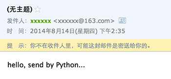
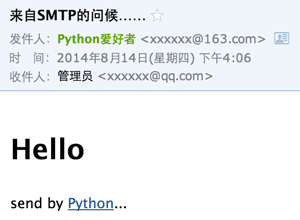
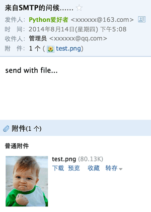

19-1 SMTP发送邮件
SMTP是发送邮件的协议，Python内置对SMTP的支持，可以发送纯文本邮件、HTML邮件以及带附件的邮件。
Python对SMTP支持有smtplib和email两个模块，email负责构造邮件，smtplib负责发送邮件。
首先，我们来构造一个最简单的纯文本邮件：
from email.mime.text import MIMEText
msg = MIMEText('hello, send by Python...', 'plain', 'utf-8')
注意到构造MIMEText对象时，第一个参数就是邮件正文，第二个参数是MIME的subtype，传入'plain'，最终的MIME就是'text/plain'，最后一定要用utf-8编码保证多语言兼容性。
然后，通过SMTP发出去：
# 输入Email地址和口令:
from_addr = raw_input('From: ')
password = raw_input('Password: ')
# 输入SMTP服务器地址:
smtp_server = raw_input('SMTP server: ')
# 输入收件人地址:
to_addr = raw_input('To: ')
import smtplib
server = smtplib.SMTP(smtp_server, 25) # SMTP协议默认端口是25
server.set_debuglevel(1)
server.login(from_addr, password)
server.sendmail(from_addr, [to_addr], msg.as_string())
server.quit()
我们用set_debuglevel(1)就可以打印出和SMTP服务器交互的所有信息。SMTP协议就是简单的文本命令和响应。login()方法用来登录SMTP服务器，sendmail()方法就是发邮件，由于可以一次发给多个人，所以传入一个list，邮件正文是一个str，as_string()把MIMEText对象变成str。
如果一切顺利，就可以在收件人信箱中收到我们刚发送的Email：

仔细观察，发现如下问题：
- 邮件没有主题；
- 收件人的名字没有显示为友好的名字，比如Mr Green green@example.com；
- 明明收到了邮件，却提示不在收件人中。
这是因为邮件主题、如何显示发件人、收件人等信息并不是通过SMTP协议发给MTA，而是包含在发给MTA的文本中的，所以，我们必须把From、To和Subject添加到MIMEText中，才是一封完整的邮件：
# -*- coding: utf-8 -*-
from email import encoders
from email.header import Header
from email.mime.text import MIMEText
from email.utils import parseaddr, formataddr
import smtplib
def _format_addr(s):
name, addr = parseaddr(s)
return formataddr(( \
Header(name, 'utf-8').encode(), \
addr.encode('utf-8') if isinstance(addr, unicode) else addr))
from_addr = raw_input('From: ')
password = raw_input('Password: ')
to_addr = raw_input('To: ')
smtp_server = raw_input('SMTP server: ')
msg = MIMEText('hello, send by Python...', 'plain', 'utf-8')
msg['From'] = _format_addr(u'Python爱好者 <%s>' % from_addr)
msg['To'] = _format_addr(u'管理员 <%s>' % to_addr)
msg['Subject'] = Header(u'来自SMTP的问候……', 'utf-8').encode()
server = smtplib.SMTP(smtp_server, 25)
server.set_debuglevel(1)
server.login(from_addr, password)
server.sendmail(from_addr, [to_addr], msg.as_string())
server.quit()
我们编写了一个函数_format_addr()来格式化一个邮件地址。注意不能简单地传入name addr@example.com，因为如果包含中文，需要通过Header对象进行编码。
msg['To']接收的是字符串而不是list，如果有多个邮件地址，用,分隔即可。
再发送一遍邮件，就可以在收件人邮箱中看到正确的标题、发件人和收件人：
你看到的收件人的名字很可能不是我们传入的管理员，因为很多邮件服务商在显示邮件时，会把收件人名字自动替换为用户注册的名字，但是其他收件人名字的显示不受影响。
如果我们查看Email的原始内容，可以看到如下经过编码的邮件头：
From: =?utf-8?b?UHl0aG9u54ix5aW96ICF?= <xxxxxx@163.com>
To: =?utf-8?b?566h55CG5ZGY?= <xxxxxx@qq.com>
Subject: =?utf-8?b?5p2l6IeqU01UUOeahOmXruWAmeKApuKApg==?=
这就是经过Header对象编码的文本，包含utf-8编码信息和Base64编码的文本。如果我们自己来手动构造这样的编码文本，显然比较复杂。
发送HTML邮件
如果我们要发送HTML邮件，而不是普通的纯文本文件怎么办？方法很简单，在构造MIMEText对象时，把HTML字符串传进去，再把第二个参数由plain变为html就可以了：
msg = MIMEText('<html><body><h1>Hello</h1>' +
'<p>send by <a href="http://www.python.org">Python</a>...</p>' +
'</body></html>', 'html', 'utf-8')
再发送一遍邮件，你将看到以HTML显示的邮件：

发送附件
如果Email中要加上附件怎么办？带附件的邮件可以看做包含若干部分的邮件：文本和各个附件本身，所以，可以构造一个MIMEMultipart对象代表邮件本身，然后往里面加上一个MIMEText作为邮件正文，再继续往里面加上表示附件的MIMEBase对象即可：
# 邮件对象:
msg = MIMEMultipart()
msg['From'] = _format_addr(u'Python爱好者 <%s>' % from_addr)
msg['To'] = _format_addr(u'管理员 <%s>' % to_addr)
msg['Subject'] = Header(u'来自SMTP的问候……', 'utf-8').encode()
# 邮件正文是MIMEText:
msg.attach(MIMEText('send with file...', 'plain', 'utf-8'))
# 添加附件就是加上一个MIMEBase，从本地读取一个图片:
with open('/Users/michael/Downloads/test.png', 'rb') as f:
# 设置附件的MIME和文件名，这里是png类型:
mime = MIMEBase('image', 'png', filename='test.png')
# 加上必要的头信息:
mime.add_header('Content-Disposition', 'attachment', filename='test.png')
mime.add_header('Content-ID', '<0>')
mime.add_header('X-Attachment-Id', '0')
# 把附件的内容读进来:
mime.set_payload(f.read())
# 用Base64编码:
encoders.encode_base64(mime)
# 添加到MIMEMultipart:
msg.attach(mime)
然后，按正常发送流程把msg（注意类型已变为MIMEMultipart）发送出去，就可以收到如下带附件的邮件：

发送图片
如果要把一个图片嵌入到邮件正文中怎么做？直接在HTML邮件中链接图片地址行不行？答案是，大部分邮件服务商都会自动屏蔽带有外链的图片，因为不知道这些链接是否指向恶意网站。
要把图片嵌入到邮件正文中，我们只需按照发送附件的方式，先把邮件作为附件添加进去，然后，在HTML中通过引用src="cid:0"就可以把附件作为图片嵌入了。如果有多个图片，给它们依次编号，然后引用不同的cid:x即可。
把上面代码加入MIMEMultipart的MIMEText从plain改为html，然后在适当的位置引用图片：
msg.attach(MIMEText('<html><body><h1>Hello</h1>' +
'<p><img src="cid:0"></p>' +
'</body></html>', 'html', 'utf-8'))
再次发送，就可以看到图片直接嵌入到邮件正文的效果：

同时支持HTML和Plain格式
如果我们发送HTML邮件，收件人通过浏览器或者Outlook之类的软件是可以正常浏览邮件内容的，但是，如果收件人使用的设备太古老，查看不了HTML邮件怎么办？
办法是在发送HTML的同时再附加一个纯文本，如果收件人无法查看HTML格式的邮件，就可以自动降级查看纯文本邮件。
利用MIMEMultipart就可以组合一个HTML和Plain，要注意指定subtype是alternative：
msg = MIMEMultipart('alternative')
msg['From'] = ...
msg['To'] = ...
msg['Subject'] = ...
msg.attach(MIMEText('hello', 'plain', 'utf-8'))
msg.attach(MIMEText('<html><body><h1>Hello</h1></body></html>', 'html', 'utf-8'))
# 正常发送msg对象...
加密SMTP
使用标准的25端口连接SMTP服务器时，使用的是明文传输，发送邮件的整个过程可能会被窃听。要更安全地发送邮件，可以加密SMTP会话，实际上就是先创建SSL安全连接，然后再使用SMTP协议发送邮件。
某些邮件服务商，例如Gmail，提供的SMTP服务必须要加密传输。我们来看看如何通过Gmail提供的安全SMTP发送邮件。
必须知道，Gmail的SMTP端口是587，因此，修改代码如下：
smtp_server = 'smtp.gmail.com'
smtp_port = 587
server = smtplib.SMTP(smtp_server, smtp_port)
server.starttls()
# 剩下的代码和前面的一模一样:
server.set_debuglevel(1)
...
只需要在创建SMTP对象后，立刻调用starttls()方法，就创建了安全连接。后面的代码和前面的发送邮件代码完全一样。
如果因为网络问题无法连接Gmail的SMTP服务器，请相信我们的代码是没有问题的，你需要对你的网络设置做必要的调整。
小结
使用Python的smtplib发送邮件十分简单，只要掌握了各种邮件类型的构造方法，正确设置好邮件头，就可以顺利发出。
构造一个邮件对象就是一个Messag对象，如果构造一个MIMEText对象，就表示一个文本邮件对象，如果构造一个MIMEImage对象，就表示一个作为附件的图片，要把多个对象组合起来，就用MIMEMultipart对象，而MIMEBase可以表示任何对象。它们的继承关系如下：
Message
+- MIMEBase
+- MIMEMultipart
+- MIMENonMultipart
+- MIMEMessage
+- MIMEText
+- MIMEImage
这种嵌套关系就可以构造出任意复杂的邮件。你可以通过email.mime文档查看它们所在的包以及详细的用法。
源码参考：
https://github.com/michaelliao/learn-python/tree/master/email